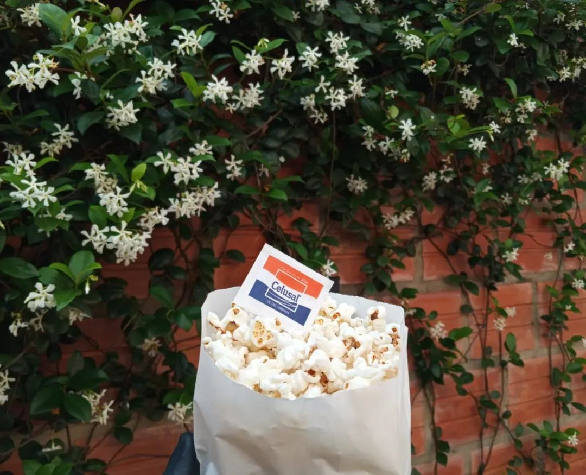
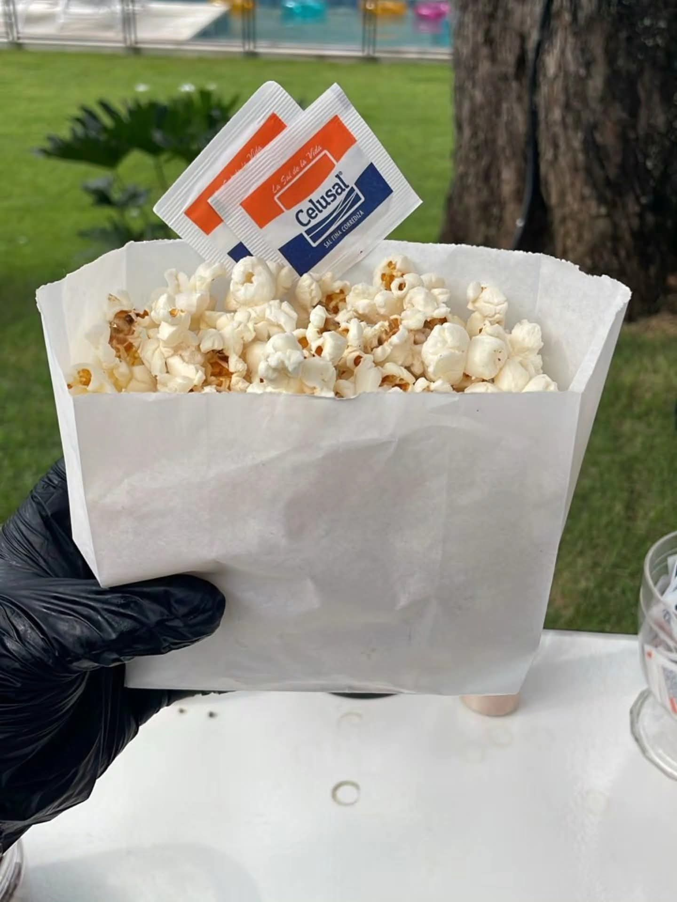
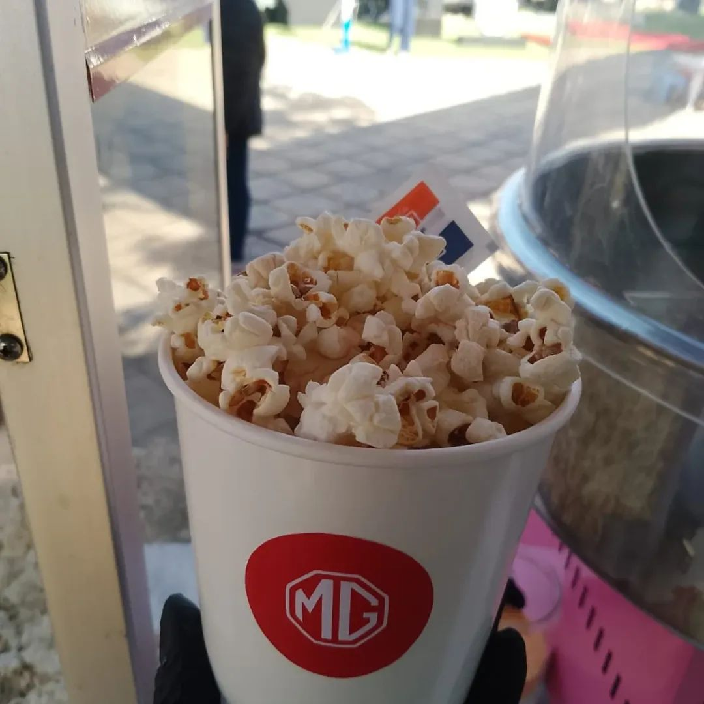
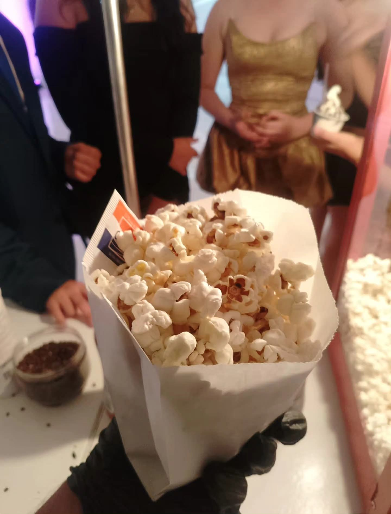
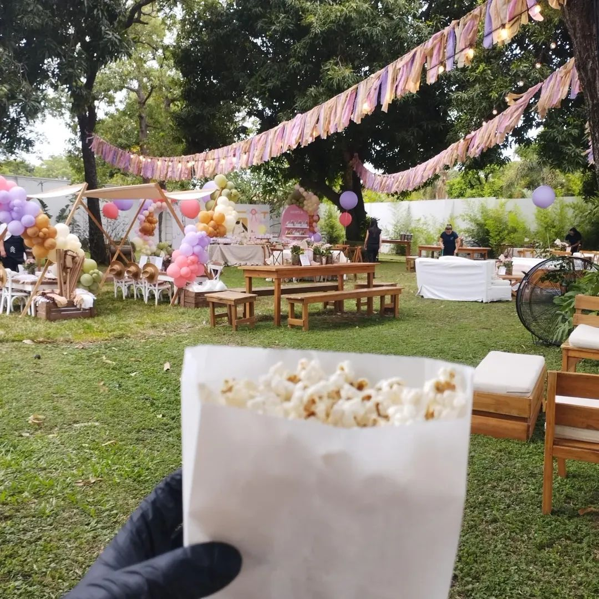
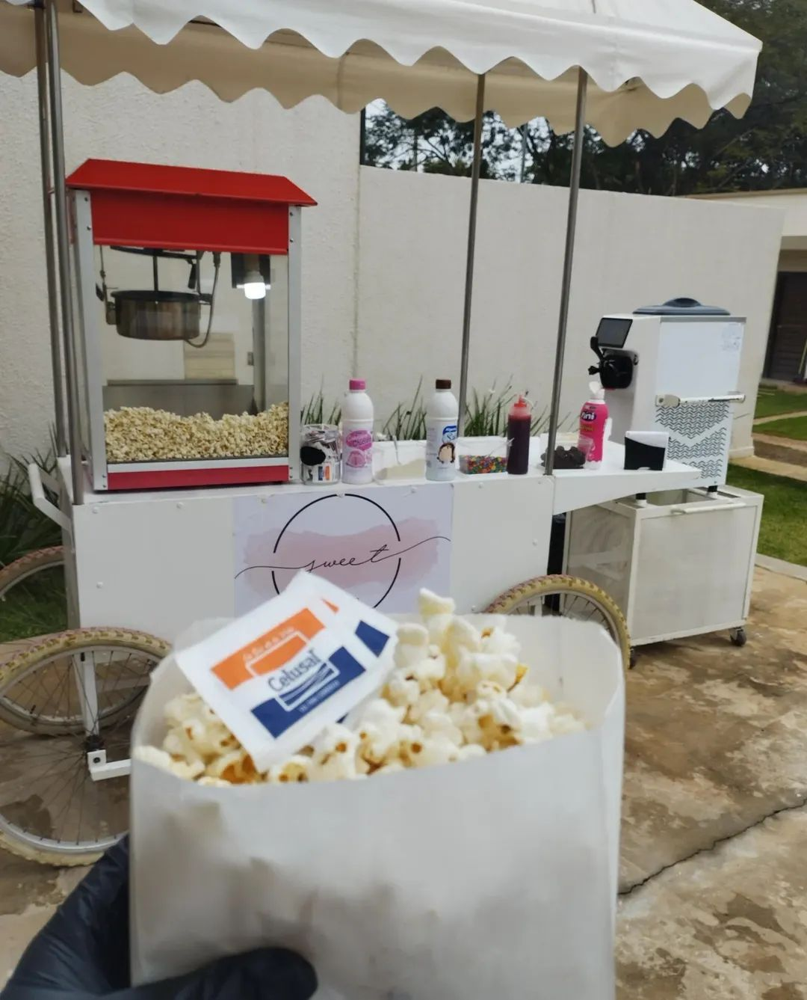

Sabor irresistible: Preparado al momento para garantizar que siempre esté calentito, crujiente y fresco.
El complemento perfecto: Es la opción ideal para cualquier edad; ligero, adictivo y combina con cualquier tipo de temática.
Presentación temática: Adaptamos nuestra estación y los recipientes para que se vean increíbles junto a tu decoración.
Servicio rápido: Diseñado para atender a muchos invitados en poco tiempo, evitando filas y asegurando que nadie se quede con las ganas.